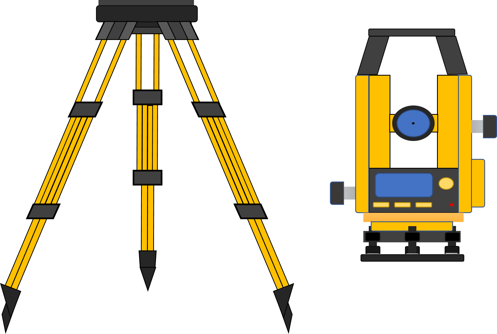

Trigonometric Leveling
STEP
1
Objective:
To determine elevation of an object by trigonometric leveling.
Apparatus used:
Theodolite

Choose any of the following type of problem
find the elevation of structure when base is accessible.
find the elevation of structure when base is not accessible.